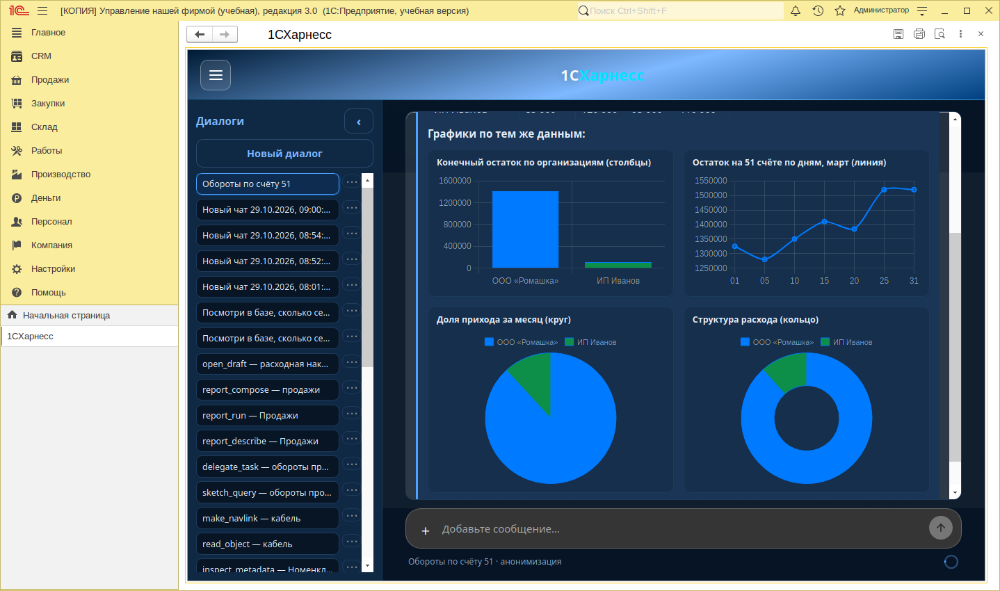
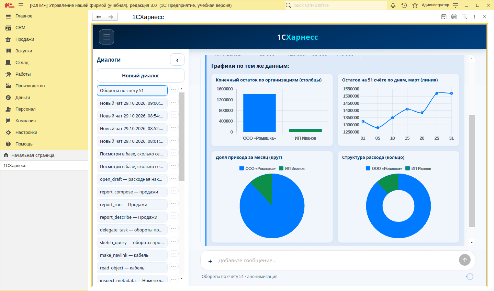
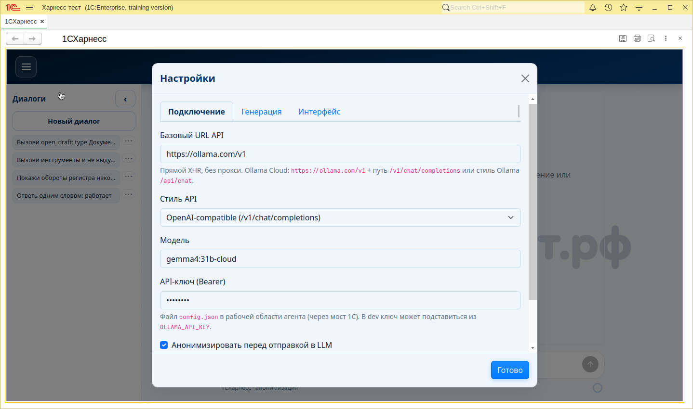
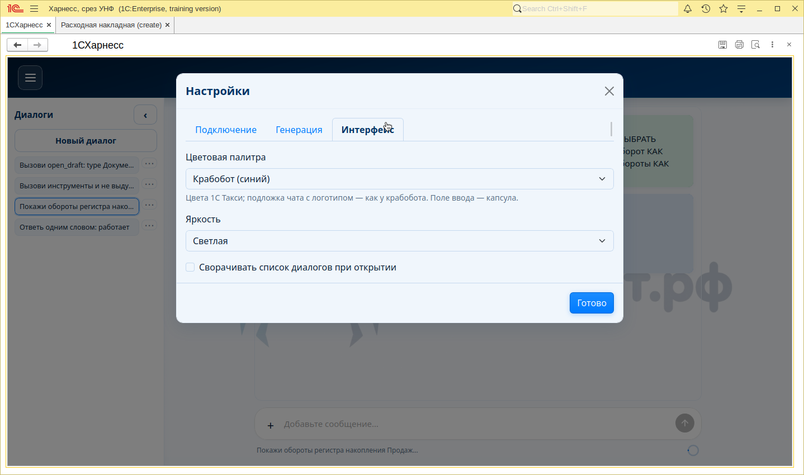

Отдельный проект · обработка для 1С
1CHarness
Чат-агент для 1С:Предприятие: спрашивайте базу на русском — субагент сам разбирает метаданные и запросы, в чат возвращает краткий ответ.
Интерфейс в 1С
Скриншоты из окна 1С:Предприятие — тот же чат, что внутри обработки.







Что это
Внешняя обработка с UI чата внутри окна 1С. Диалог в духе крабобота, инструменты сеанса — через DOM-мост обработки, LLM — любой OpenAI-compatible API (по умолчанию Ollama Cloud).
-
explore_data
Главный сценарий для вопросов по данным: один вызов — субагент по карте
data/map.md, в чат только summary и trace. -
Карта конфигурации
При первом диалоге база может сама собрать карту объектов и потоков — дальше агент опирается на неё, а не на слепой перебор.
-
Графики и черновики
Интерактивные превью Chart.js в ответе, открытие формы документа без записи, отчёты и запросы прямо из сеанса.
-
Анонимизация
ИНН, телефоны, почта и названия организаций можно подменять метками перед отправкой в LLM и восстанавливать в ответе.
Быстрый старт
Откройте обработку в своей базе и настройте подключение к LLM.
- Скачайте
epf/1CHarness.epfиз репозитория и откройте в 1С (на предупреждении — «Да»). - Новый диалог: при отсутствии карты данных согласитесь построить её.
-
Настройки → Подключение: например
https://ollama.com/v1, модель и API Key — пишутся вworkspace/config.json. - Enter — отправить; Shift+Enter — новая строка.
Связь с крабоботом
1CHarness — отдельный продукт для 1С, не канал и не плагин krabobot. UI чата вдохновлён крабоботом (в том числе палитра «Крабобот» рядом с «1С Такси»), но репозиторий, релизы и сценарии использования — свои.